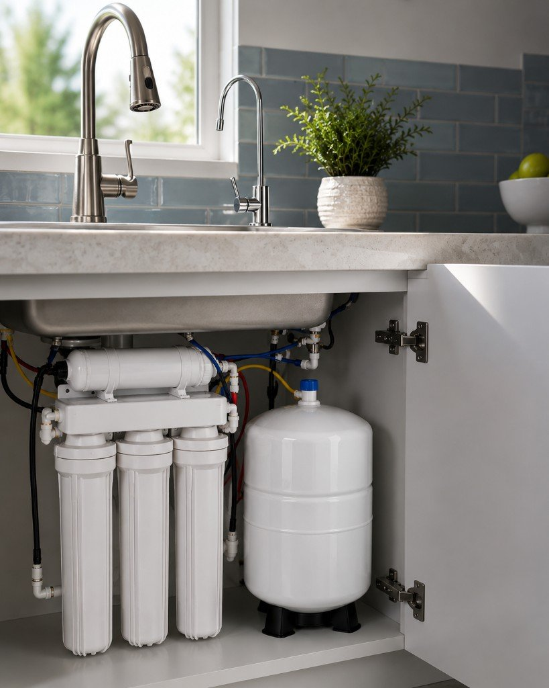
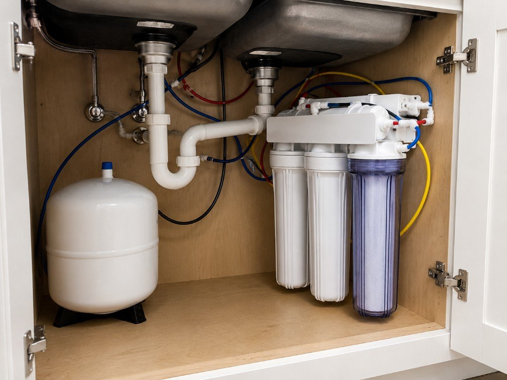

Reverse Osmosis Drinking Water Systems in Baton Rouge
Capital Water Co. installs reverse osmosis drinking water systems for households in Baton Rouge, New Orleans, and Southeast Louisiana seeking cleaner, better-tasting water from a dedicated kitchen tap. These systems help reduce many dissolved contaminants that standard filters may miss, making them a practical choice for cooking, drinking, coffee, and daily hydration.

Pure water, precise installation
Capital Water Co. for Advanced Reverse Osmosis Drinking Water Systems
- Careful Under-Sink Planning: Capital Water Co. reviews cabinet space, drain connections, feed lines, and faucet placement before installation begins. That detail-focused approach helps avoid cramped layouts and service issues later, especially in kitchens where garbage disposals, pullout bins, or limited storage already compete for room.
- Cleaner Water for Daily Use: Capital Water Co. installs reverse osmosis systems that support better-tasting water for drinking, tea, baby formula, and meal preparation. For households trying to reduce bottled water use, a dedicated filtration tap offers a convenient option during school mornings, evening cooking, and weekend entertaining.
- Dependable Solutions for Local Homes: Capital Water Co. matches equipment to household demand, water concerns, and fixture layout instead of using a one-size-fits-all setup. In Baton Rouge, LA, that matters for townhomes, single-family houses, and remodeled kitchens where owners want reliable filtered drinking water without unnecessary plumbing changes.
Focused filtration benefits
Why Advanced Reverse Osmosis Drinking Water Systems Matter for Better Drinking Water
- Water Quality Concerns Affect Taste: Even when water is treated and safe, dissolved solids, chlorine-related taste, and other unwanted elements can still affect drinking water quality. In Baton Rouge, LA, many households look for a more refined option at the kitchen sink where cooking, filling bottles, and making coffee happen daily.
- Busy Households Need Practical Options: Families often want a simpler routine than constantly buying, carrying, and storing bottled water or refilling countertop pitchers. A reverse osmosis system creates a more convenient drinking water source for school lunches, workout bottles, and quick meal prep during packed weekdays.
- Kitchen Upgrades Should Improve Function: When a home is being updated, adding a point-of-use filtration system can make the kitchen more useful from day one. Reverse osmosis is often considered during appliance replacements, sink changes, or move-in preparations when owners want cleaner drinking water without temporary workarounds.

FREQUENTLY ASKED ・ ANSWERS TO YOUR QUESTIONS
Frequently Asked Questions About Reverse Osmosis Drinking Water Systems
When should homeowners replace filters on Reverse Osmosis Drinking Water Systems?
Filter replacement depends on water quality, system design, and daily usage, but many households follow a schedule of several months for prefilters and longer for membranes. Capital Water Co. helps homeowners understand maintenance intervals, recognize performance changes, and keep drinking water systems operating as intended.
Can Reverse Osmosis Drinking Water Systems be installed in townhomes with smaller kitchen cabinets?
Yes, many systems can fit townhome kitchens, though available cabinet space, drain placement, and existing plumbing connections need to be checked first. Capital Water Co. evaluates under-sink layout, faucet options, and service access so smaller kitchens can still support effective filtered drinking water solutions.
What problems can Reverse Osmosis Drinking Water Systems help address for households bothered by tap water taste?
These systems are often used to improve taste and odor while reducing many dissolved substances that basic faucet or pitcher filters may not handle as effectively. Capital Water Co. can review common drinking water complaints, explain realistic results, and recommend a setup based on kitchen use and household preferences.
SERVICE AREA
Find Us
Capital Water Co. installs reverse osmosis drinking water systems in Baton Rouge and New Orleans, including compact townhome kitchens and larger family homes. Request a free consultation to review cabinet space and drinking-water goals.